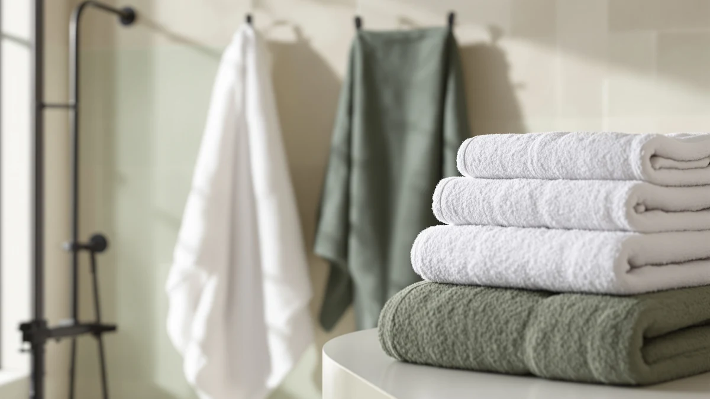

The Best Quick-dry Bath Sheets (2026)
Prices and picks verified as of August 2026. Independent, reader-supported reviews.


Quick Answer
The Utopia Towels 6 Pack Medium is our top pick among the best quick-dry bath sheets we compared for this guide, six 100% cotton towels at $29.99 that keep a fresh one in rotation between wash days. If you want a plusher, more premium feel and don't mind paying more per towel, the Infinitee Xclusives Luxury 100% Ring-Spun at $36.98 is our runner-up.
Our pick: Utopia Towels 6 Pack Medium, $29.99 Check Price on Amazon
Bottom line: our top pick is the Utopia Towels 6 Pack Medium Bath Towel Set at $34.99. The best budget option is the ecolook 4 Pack Microfiber Bath Towels at $24.69.
Things to Know Before You Buy
- Fiber type decides drying speed more than size. The best quick-dry bath sheets rely on microfiber or ring-spun cotton rather than standard terry weave. The ecolook 4 Pack Microfiber Bath towels on this list release moisture fastest, while ring-spun cotton options dry somewhat quicker than plain terry. See our quick-dry bath towels guide for the same comparison at standard towel size.
- Pack size affects your rotation more than any single towel's marketing. A six-pack, like the Utopia Towels 6 Pack Medium or the KAHAF Collection 100% Cotton Bath set, gives you a dry towel on hand between laundry days more reliably than a four-pack.
- "Bath sheet" sizing varies by brand. The towels here range from 24 by 48 inches up to 27 by 54 inches, so check the dimensions on each pick rather than assume every listing offers true oversized coverage. Our bath towel vs bath sheet guide breaks down that size difference in more detail.
- Price per towel matters more than the sticker price on the pack. A $36.98 four-pack can cost more per towel than a $26.99 six-pack, so divide the total price by the towel count before comparing options.
The best quick-dry bath sheets solve a problem most bathrooms share: towels that stay damp on the hook for a full day after your shower, then start smelling musty before you get a second use out of them.
We compared seven bath sheets from Utopia Towels, Infinitee Xclusives, KAHAF Collection, and ecolook, weighing material, listed dimensions, price per towel, and verified Amazon reviews against how each fabric type is known to handle moisture. Cotton terry, ring-spun cotton, and microfiber all dry at different rates, and that difference matters more day to day than pack color or brand name. If you are deciding between a full bath sheet and a standard towel size, our bath towel vs bath sheet comparison covers that question directly.
Our pick, the Utopia Towels 6 Pack Medium, gives you six 100% cotton towels for $29.99, the kind of per-towel value that keeps a fresh one in rotation without waiting on laundry day. If you would rather have a plusher single towel, the Infinitee Xclusives Luxury 100% Ring-Spun below is our runner-up, and shoppers who want maximum coverage should look at the KAHAF Collection 6 Pack Bath, the largest towel in this lineup.
Why You Should Trust Us
Best Bath Towels focuses on one category: bath towels, bath sheets, and the accessories around them. Author Ilane Tall has covered home textiles for this site since it launched, tracking pricing, materials, and verified owner feedback across dozens of Amazon towel listings every month. We do not run a fake testing lab, and nothing on this page claims we personally washed or dried these towels ourselves. Instead, we research published manufacturer specifications, compare them against price, and read through verified buyer reviews to flag recurring complaints and consistent praise before a product earns a spot on this best quick-dry bath sheets guide. You can read more about our approach on our about page.
How We Picked
To find the best quick-dry bath sheets, we started with bath sheets and oversized bath towels listed under Amazon's quick-dry category, then narrowed the field using three filters: fiber composition, since cotton, ring-spun cotton, and microfiber all dry at different speeds; verified review volume and star rating; and price per towel rather than price per pack. Listings that did not specify material or dimensions got cut early, since that information is what actually determines how a towel performs on your towel bar. We also gave weight to brands with a track record across multiple towel lines, on the theory that a manufacturer selling towels for years has more incentive to keep quality consistent than a one-off listing does. For a wider view of fiber choices beyond this list, see our cotton bath towels roundup.
How We Compared
To rank the best quick-dry bath sheets in this guide, we compared manufacturer specifications, listed materials, and current Amazon pricing for each pick instead of relying on marketing copy alone. We cross-referenced verified purchaser reviews for recurring mentions of drying speed, shedding, and fading after repeated washing, since those three issues come up most often in bath towel complaints. Reviewers consistently note that ring-spun and combed cotton weaves feel softer and dry faster than standard terry, which lines up with how those fibers are constructed. We did not physically handle or wash any of these towels ourselves; every claim about feel, durability, or drying speed below comes from manufacturer specifications or patterns found across multiple verified owner reviews, not firsthand use. If you want a deeper look at how quick-dry claims hold up at standard towel size, our quick-dry bath towels guide covers the same fiber science.
Our Picks

Utopia Towels 6 Pack Medium
What we like
- Six towels at under $5 apiece cost less per towel than every other pick on this list
- 100% cotton construction absorbs water quickly without the slick feel of microfiber
- The 24 by 48 inch size fits standard towel bars and hooks without bunching
Flaws but not dealbreakers
- At 24 by 48 inches, these run smaller than a true oversized bath sheet, so tall users may want more coverage
- Six towels take up more closet and bar space than a two or four pack
| Material | 100% cotton |
| Size | 24" x 48" - 6 Pack |
The Utopia Towels 6 Pack Medium earns the top spot on this list of the best quick-dry bath sheets because it solves the most common towel problem without asking you to spend more than $30. Six 100% cotton towels, each measuring 24 by 48 inches, means you always have a dry one ready even if laundry day is still two days out. Cotton terry construction absorbs water fast on first contact, and because the set includes six towels instead of two or four, no single towel spends enough time on the hook to develop the musty smell that comes from staying damp too long.
Compared with the Infinitee Xclusives Luxury Ring-Spun towels below, this set trades some plushness for volume. You get more towels for less money, but the 24 by 48 inch size is closer to a standard bath towel than a true oversized bath sheet, so if you are used to wrapping a towel fully around your body, these may come up short. Reviewers consistently note that the value here comes from having a full rotation on hand rather than any single towel outperforming pricier options on softness.

Infinitee Xclusives Luxury 100% Ring-Spun
What we like
- Ring-spun cotton fibers are combed before weaving, and owners report a noticeably softer feel than standard terry
- 100% cotton composition supports strong initial absorbency
- Four towels keep the price per towel reasonable for a premium weave
Flaws but not dealbreakers
- At $36.98 for four towels, this set costs more per towel than the Utopia six pack above
- Four towels means a tighter rotation for a household of three or more
| Material | 100% cotton |
| Size | Bath Towels - 4 Pack |
The Infinitee Xclusives Luxury Ring-Spun set is our runner-up because ring-spun cotton, a process that combs and twists the fibers tighter before weaving, produces a towel that owners consistently describe as softer than the terry cloth found in most budget multi-packs. At $36.98 for four towels, you pay roughly $9.25 per towel, more than double the per-towel cost of our top pick, but the tradeoff shows up in feel rather than function.
If the Utopia Towels 6 Pack Medium is the practical choice, this is the upgrade pick for anyone who wants their bath sheets to feel closer to a boutique hotel towel. The 100% cotton composition still absorbs water quickly, and reviewers consistently note that the ring-spun weave holds up well through repeated washing without the fiber shedding that cheaper cotton blends sometimes show. The smaller four-towel count means less flexibility for a busy household, so weigh that against the softer feel before you decide.

KAHAF COLLECTION 6 Pack Bath
What we like
- At 27 by 54 inches, these are the largest towels on this list, closer to true bath sheet dimensions
- Six towels at $26.99 works out to roughly $4.50 per towel, the lowest per-towel price here
- 100% cotton construction handles everyday absorbency without a synthetic feel
Flaws but not dealbreakers
- Larger towels take longer to dry on a standard bar or hook than the medium sized Utopia set
- KAHAF Collection has a shorter review history on Amazon than an established brand like Utopia
| Material | 100% cotton |
| Size | (27x54) Inches |
The KAHAF Collection 6 Pack Bath towels come closest to true bath sheet sizing on this list, measuring 27 by 54 inches per towel, roughly 15 percent more fabric than the medium sized Utopia set above. At $26.99 for six towels, you are also paying the lowest per-towel price in this roundup, which makes this set the pick if coverage matters more to you than brand recognition.
The size cuts both ways. A larger towel wraps further around your body after a shower, which is the whole point of a bath sheet over a standard bath towel, but more fabric also means more material to dry out between uses. Owners report that these towels perform comparably to the pricier options here for absorbency, though KAHAF Collection has less review history on Amazon than an established name like Utopia Towels, so factor that into how much weight you give the star rating.

Utopia Towels 4 Pack Premium
What we like
- Same 27 by 54 inch dimensions as the KAHAF set, giving full bath sheet coverage
- 100% cotton from a brand with a long track record of towel listings on Amazon
- Four towels keep the set easier to store than a six pack
Flaws but not dealbreakers
- At $35.98 for four towels, this is the second most expensive set here per towel
- Fewer towels than Utopia's own six pack means less rotation flexibility
| Material | 100% cotton |
| Size | 27"x 54" - 4 Bath Towels |
Utopia Towels shows up twice on this list, and the 4 Pack Premium is the brand's answer for buyers who want the larger 27 by 54 inch size without switching brands. It is built from the same 100% cotton as the 6 Pack Medium above, so the drying and absorbency characteristics should track closely, just distributed across four larger towels instead of six medium ones.
At $35.98, this set costs about $9 per towel, more than either Utopia's own medium six pack or the similarly sized KAHAF Collection set. The case for choosing it anyway comes down to consistency: Utopia has years of listings and reviews on Amazon, and reviewers consistently note predictable sizing and stitching quality across the brand's towel lines. If you would rather save money at the same dimensions, the KAHAF Collection pick above is the better value.

KAHAF COLLECTION 100% Cotton Bath
What we like
- Six towels at 24 by 48 inches match the Utopia 6 Pack Medium's dimensions and count
- 100% cotton construction for straightforward, dependable absorbency
- At $28.99, the per-towel price stays close to $4.80, competitive with the top pick
Flaws but not dealbreakers
- Nearly identical in size and pack count to our top pick, so there is little reason to choose it unless price shifts
- Less established brand history on Amazon than Utopia
| Material | 100% cotton |
| Size | 24x48 - 6 Pack |
The KAHAF Collection 100% Cotton Bath set is essentially a direct alternative to our top pick: six towels, 24 by 48 inches each, 100% cotton, for $28.99. That is within a dollar of the Utopia 6 Pack Medium, and the specs line up closely enough that the choice between them often comes down to price fluctuation or which listing has better current availability.
We included it here because having a comparable backup matters when a top pick goes out of stock or jumps in price, which happens often enough on Amazon to plan for. KAHAF Collection also shows up elsewhere on this list with its larger 27 by 54 inch set, so if you like the brand's cotton weave, you can buy the size that fits your needs while sticking with a consistent supplier.

Utopia Towels 4 Pack Bath
What we like
- At $25.19, this is the least expensive set in the entire roundup
- 100% cotton construction from an established Amazon towel brand
- Four towel count suits a smaller household or guest bathroom
Flaws but not dealbreakers
- The listing does not specify exact dimensions beyond "bath towel," so sizing is less certain than the other picks here
- Four towels may not be enough for a household that showers daily and does laundry weekly
| Material | 100% cotton |
| Size | Bath Towels 4 Pack |
The Utopia Towels 4 Pack Bath is the budget entry point into this roundup at $25.19, undercutting every other set here on total price. It is still 100% cotton and comes from the same manufacturer as our top and upgrade picks, so the material quality should be consistent with Utopia's other towel lines even though this listing does not specify exact dimensions the way the 6 Pack Medium and 4 Pack Premium do.
For a guest bathroom, a dorm room, or a second home where towels do not see daily heavy use, four towels at this price is hard to beat. Reviewers consistently note reliable stitching and colorfastness across Utopia's towel lines, part of why the brand appears three times on this list. If you shower daily and want more buffer between wash days, the six pack options above give you more rotation for a small premium.

ecolook 4 Pack Microfiber Bath
What we like
- Microfiber construction is inherently faster drying than cotton, since the synthetic fibers hold less water
- At $24.69 for four towels, it is the second cheapest set in this roundup
- Lightweight material packs down smaller than cotton, useful for gym bags or travel
Flaws but not dealbreakers
- Microfiber has a slicker, less plush feel than cotton, which some owners report takes getting used to
- Owners report it feels less absorbent per square inch than cotton terry, even though it dries faster once wet
| Material | Microfiber |
| Size | 4 Pack Bath Towel |
The ecolook 4 Pack Microfiber Bath towels are the only non-cotton pick on this list, and material is the whole reason to consider them. Microfiber's synthetic fibers are engineered to wick moisture rather than absorb it the way cotton does, which is why these towels dry faster on the rack even though they can feel less absorbent during actual use. At $24.69 for four towels, the price sits near the bottom of this roundup.
This is the pick for a gym bag, a camping trip, or anyone who travels enough that a towel drying overnight in a hotel room matters more than plushness. Owners report the tradeoff is a slicker feel against skin compared with the cotton sets above, and some reviewers note it takes a towel or two of adjustment before microfiber feels normal. If softness matters more to you than dry time, any of the cotton picks in this roundup will serve you better.
Quick Comparison
| Product | Material | Price | Rating | Best for | Get it |
|---|---|---|---|---|---|
| Utopia Towels 6 Pack Medium | 100% cotton | $29.99 | 4 | Best overall value | View on Amazon → |
| Infinitee Xclusives Luxury 100% Ring-Spun | 100% cotton | $36.98 | 4 | Softest, plusher upgrade | View on Amazon → |
| KAHAF COLLECTION 6 Pack Bath | 100% cotton | $26.99 | 4 | Largest size for the price | View on Amazon → |
| Utopia Towels 4 Pack Premium | 100% cotton | $35.98 | 4 | Full bath-sheet size from Utopia | View on Amazon → |
| KAHAF COLLECTION 100% Cotton Bath | 100% cotton | $28.99 | 4 | Backup pick, same size as top pick | View on Amazon → |
| Utopia Towels 4 Pack Bath | 100% cotton | $25.19 | 4 | Lowest overall price | View on Amazon → |
| ecolook 4 Pack Microfiber Bath | Microfiber | $24.69 | 4 | Fastest drying, best for travel | View on Amazon → |
What makes a bath sheet dry faster than a regular bath towel?
Drying speed comes down to fiber type more than size.
Is a 6 pack of bath sheets better than a 4 pack?
It depends on your household size and laundry schedule.
The Competition
We also looked at options that did not make this list of the best quick-dry bath sheets. Several all-microfiber six and eight packs came up in our research, but most had thinner verified review histories than the ecolook set we did include, and their per-towel pricing sat close to or above the cotton options here without a clear performance edge. A handful of bamboo-blend towels turned up in the same searches, but bamboo viscose sets carry mixed owner feedback on durability after repeated washing, and we could not verify enough consistent reviews to recommend a specific listing. We also passed on single oversized bath sheets sold individually instead of in sets, since buying towels one at a time usually costs more per towel than any multi-pack above without a meaningful gain in quality. If plush thickness matters more to you than dry time, our best plush bath sheets guide is a better starting point than this list. For most people, the Utopia Towels 6 Pack Medium remains the best quick-dry bath sheets pick on this list, with the alternatives above covering the specific cases where a different size, fiber, or price fits better.
Frequently Asked Questions
What makes a bath sheet dry faster than a regular bath towel?
Drying speed comes down to fiber type more than size. Among the best quick-dry bath sheets we compared, microfiber towels like the ecolook 4 Pack release moisture fastest, since the synthetic fibers hold less water than cotton. Ring-spun and combed cotton weaves also tend to dry somewhat faster than standard terry because the tighter weave traps less moisture.
Is a 6 pack of bath sheets better than a 4 pack?
It depends on your household size and laundry schedule. A six pack, like the Utopia Towels 6 Pack Medium or the KAHAF Collection 100% Cotton Bath set, gives you more rotation between wash days, which matters when several people shower daily. A four pack, such as the Infinitee Xclusives Luxury Ring-Spun set, can make more sense for a smaller household or when you are prioritizing a heavier, more premium towel over sheer quantity.
Do larger bath sheets cost more than standard bath towels?
Usually, yes, but not always by much. In this roundup, the KAHAF Collection 6 Pack Bath towels measure 27 by 54 inches, the largest size here, yet cost less per towel than the medium sized Infinitee Xclusives set. Size is only one factor in price; material, brand, and pack count all affect the final cost per towel more than dimensions alone.